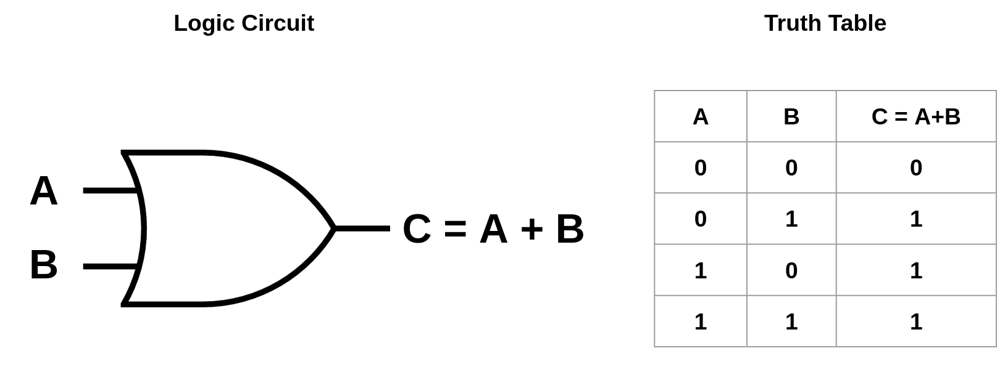
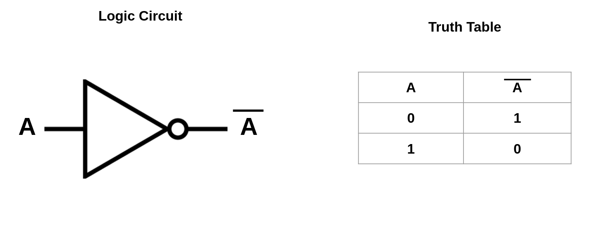
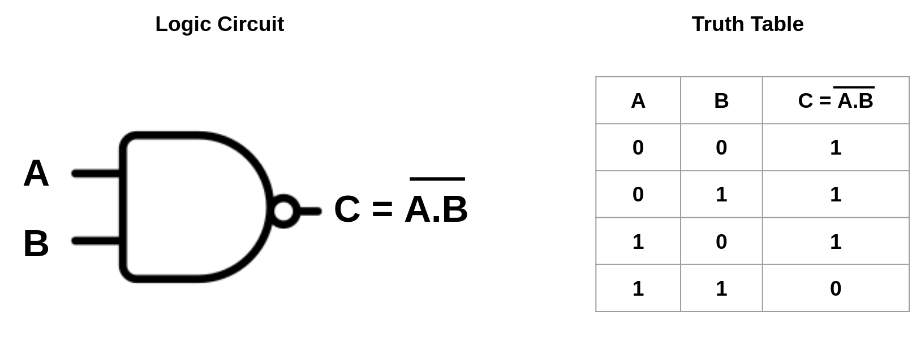
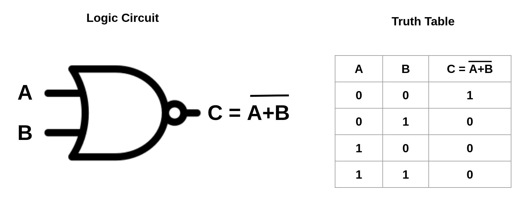
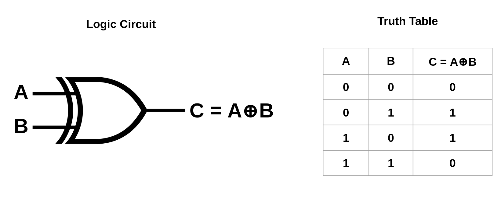
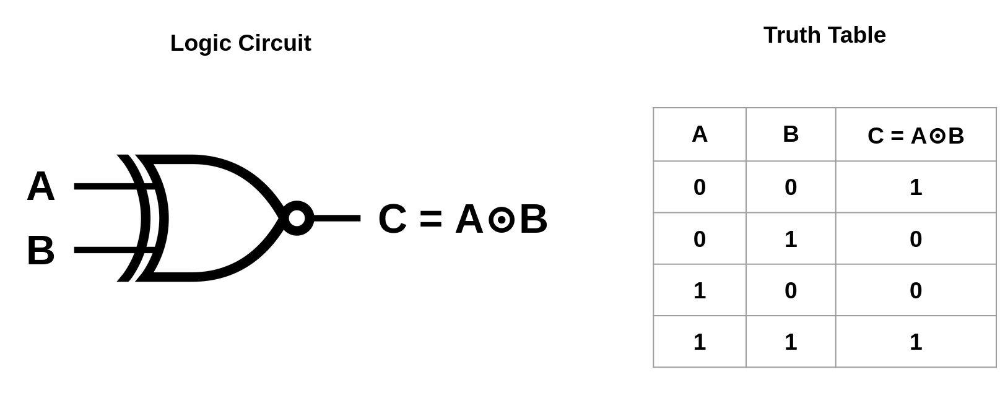

A logic gate is an idealized or physical device implementing a Boolean function, a logical operation performed on one or more binary inputs that produces a single binary output. Actually, A logic gate is a device that acts as a building block for digital circuits. They perform basic logical functions that are fundamental to digital circuits. Most electronic devices we use today will have some form of logic gates in them.
There are three types of gates: universal gates, primary gates and secondary gates.
A universal gate is a gate that can implement any Boolean function without the need to use any other gate type. Secondary gates can be derived from AND, OR, and NOT gates. But NAND and NOR gates are being classified as universal logic gates also.
An AND gate is a logic gate having two or more inputs and a single output. An AND gate operates on logical multiplication rules. In this gate, if either
of the inputs is low (0), then the output is also low. If all of the inputs are high (1), then the output will also be high.
An OR gate is a logic gate having two or more inputs and a single output. An OR gate operates on logical addition rules. In this gate, if either of the inputs is low (0) or both are high (1), then the output is high. If all of the inputs are low (0), then the output will also be low.
A NOT gate is a logic gate having single input and single output. A NOT gate operates on logical negation on its input. The NOT gate is often called an inverter. If the input is true, then the output will be false. Similarly, a false input results in a true output.
A NAND gate is equivalent to an inverted-input OR gate. It is a logic gate which produces an output which is false only if all its inputs are true. NAND is called a universal gate because all three primary logic gates can be implemented NAND gate.
A NAND gate is equivalent to an inverted-input OR gate. It is a logic gate which produces an output which is false only if all its inputs are true. NAND is called a universal gate because all three primary logic gates can be implemented NAND gate.
The X-OR gate is a two-input digital circuit that outputs a logical “1” if the two input values differ. It means that, the X-OR gate gives an high (1) output only if its two inputs are dissimilar, namely if one of them is high (1) and the other is low (0). XOR gate is used extensively in error detection circuits, computational logic comparators, and arithmetic logic circuits.
The XNOR gate is a combination XOR gate followed by an inverter. It means that, the X-NOR gate gives an high (1) output only if its two inputs are same, namely if both of them is high (1) or both of them are low (0). The XNOR logic gates are used in error detecting circuits which are to detect Odd parity or even parity bits in digital data transmission circuits.
